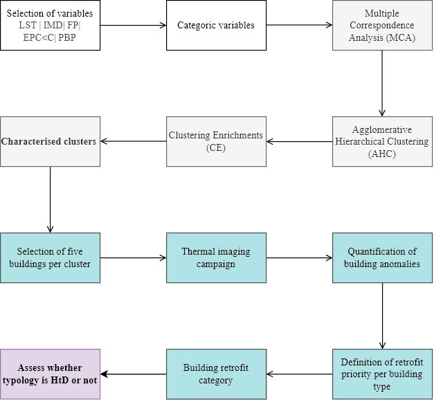
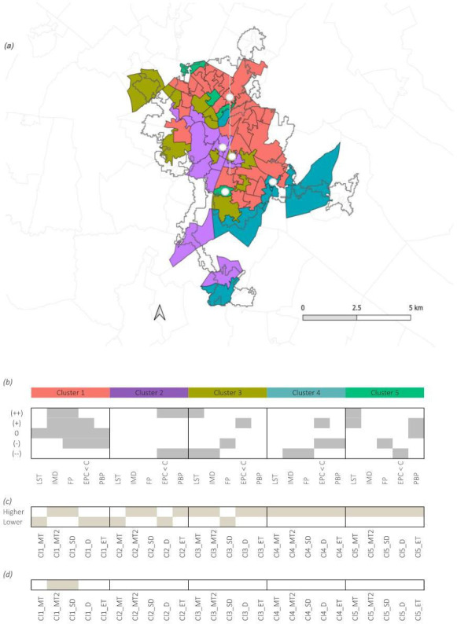

Did the feedback land? Does the paper say what you think? Is the package complete?
Bring: your Week 10 Peer Review Card, your Revision Ledger, one claim and its source.
This isn’t a new literature-review assignment. It’s the Week 2 evidence audit, applied to the one kind of source we haven’t inspected yet: published papers.
Papers are the evidence most often cited from the abstract alone. One claim, one source, read properly.
Find
OpenAlex: the record, a free PDF, what cites it
Read
full text: methods, results, limitations
Check
regex over text and files
Record
Brief, capsule source list, ledger
Week 2 audited your evidence · Week 8 reran your workflow and fact-checked AI · Week 10 reviewed each other’s work · Week 11 checks the published sources · Week 12 checks an AI critic.
The same question each time: what does this evidence actually support?
3–13 min · 2½ min each
Your Week 10 reviewer answers one question:
“Is that what I meant?”
| Status | What you show |
|---|---|
| Addressed | The changed page or figure, next to the advice |
| In progress | What you have done, and what still remains before Week 12 |
| Deferred or rejected | The reason, written in the ledger |
“The advice was ___. I addressed / am working on / deferred it: ___. You can see it in ___.”
A reasoned rejection counts as a ledger entry. Silence doesn’t.
13–17 min · on the worksheet
Pick one claim your project relies on, and the source you rely on for it.
Read only the abstract, then write:
“The abstract says ___. I took it to mean ___ for my project, so I was going to ___.”
PhD: a research premise or method choice. Studio: a design decision. A guideline, standard or published precedent is a valid source if that is what your decision rests on. Evidence Clinic Worksheet (PDF)
Regex (regular expression) is a short rule that describes a pattern of characters, not a fixed word.
You can use it in:
.* buttonre.findall(r"pattern", text)=REGEXMATCH(A2, "pattern")It doesn’t work in Google’s search box. That has its own operators.
| Job in your project | Example pattern |
|---|---|
| Capsule: check every exported variant file follows the README’s naming rule | ^variant_\d{2}\.csv$ |
| Reading: find every temperature reported in a paper’s text | \d+(\.\d+)?\s?°C |
| Data: pull the number out of a messy column (“approx. 0.62 WWR”) | =REGEXEXTRACT(A2, "\d+\.?\d*") in Sheets |
| Literature (PhD): flag records in an export that mention your method | \bthermal imag[a-z]* with i |
Ten minutes of regex can save an hour of scrolling, but only if you check what it missed.
Four lines of notes:
Pattern shade: predict the matches.
One match: the shade inside “shaded”. It misses “Shade” and “SHADING”, because matching is case-sensitive by default.
Add the flag i (ignore case) and “Shade” joins it. “SHADING” still doesn’t, since it doesn’t contain “shade”.
\b marks the edge of a word\b means “a word starts or ends here”.
Now: Shade ✓ · shaded ✗ · SHADING ✗ · shadow ✗
Stricter, but now the forms we wanted are missing too.
( | ) means either / or“shad”, followed by e, ed or ing, then the end of a word.
Shade ✓ · shaded ✓ · SHADING ✓ · shadow ✗
You’ve just written a search for one design term in every form you care about.
| Piece | Means |
|---|---|
\d |
one digit, 0–9 |
+ |
one or more of the thing before it |
? |
the thing before it is optional |
{2} |
exactly two of the thing before it |
\. |
a real full stop (a bare . means any character) |
\s |
a space |
Matches: 2°C and 2.5 °C. Not “25 buildings”, not “0.5 K”.
Useful for scanning a long PDF’s text for every reported value, before you check what each one refers to.
^ and $: the whole line, nothing else| File | Passes? |
|---|---|
variant_01.csv |
✓ |
variant_1.csv |
✗ only one digit |
Variant_03.csv |
✗ capital V |
variant_04.csv.bak |
✗ something after .csv |
Drop the \ before .csv and variant_05xcsv passes too. . means any character.
A reference export (RIS) puts each field on its own tagged line:
The part inside ( ) is returned on its own: 10.1098/rsos.241337, the DOI.
For whole reference libraries, use a reference manager or a RIS parser. Regex is for one specific clean-up. ScienceDirect export help
5 min · Regex Lab · predict before you run
\bpassive\b matches the first two lines.
A match tells you where to look. You still have to read it.
| You write | It means |
|---|---|
shade |
those letters, in that order |
\b |
edge of a word |
(a|b) |
a or b, and capture it |
\d · \s · . |
digit · space · any character |
+ · ? · {2} · {2,3} |
one or more · optional · exactly 2 · 2 to 3 |
^ · $ |
start · end (of each line, with flag m) |
\. |
a real full stop |
flag i |
ignore upper/lower case |
Syntax differs slightly between tools. MDN regex guide · Regex Lab
OpenAlex is a free, open index of scholarly works: papers, authors, institutions, citations.
Paste this into a browser tab. You don’t need an account or a key:
One DOI gives you one record: who, when, where, whether it’s free to read, what it cites and what cites it.
Use it when the PDF is paywalled (check oa_url), when you want to know if a paper you cite has been tested or challenged since, or when you’re building a reading list for a chapter.
{
"id": "https://openalex.org/W4406352916",
"display_name": "Towards carbon neutrality: mapping mass retrofit
opportunities in Cambridge, UK",
"publication_year": 2025,
"open_access": {
"is_oa": true,
"oa_url": "https://royalsocietypublishing.org/rsos/article-pdf/doi/10.1098/rsos.241337/..."
},
"cited_by_count": 2,
"referenced_works_count": 33
}Retrieved 25 November 2026. Add ?select=id,display_name,open_access,cited_by_count,referenced_works_count to the URL to get only these fields. Counts change as the index updates.
oa_urlA legal free copy of the full text, if one is known.
Before you write “no access”, check here.
referenced_worksWhat this paper cites.
Go backwards to where its claim comes from.
cites: filterWhat cites this paper.
Go forwards: has anyone tested, extended or challenged it?
filter=cites:W4406352916 returns 2 works:
Judging by the titles alone, neither seems to retest the thermal-imaging method. If that holds when you open them, it tells you something too: nobody has checked the method yet, as far as this index shows.
Retrieved 25 November 2026. “Not in the index” is not the same as “does not exist”. Check one other source (e.g. Google Scholar’s “Cited by”) before relying on it.
4 min · browser tab · within 31–44
https://api.openalex.org/works/doi:YOUR-DOIoa_url (or “none”), cited by and references counts.cites: list. Note one title worth checking later.No DOI? Search by title: https://api.openalex.org/works?search=your title words. Compare authors and year before accepting a match.
A free API key raises the request limit and is only needed for heavier scripted use. Setup and private-key instructions
Some records are also missing an abstract, have the wrong metadata, or match the wrong paper.
OpenAlex gets you to the paper. Only reading it tells you what it says.
When you review many papers, readers need to know how you chose them.
PRISMA 2020 is the standard way to report that for a systematic review: a 27-item checklist and a flow diagram.
Identification
records found, by source
Screening
records excluded, with reasons
Included
studies in the review
For the shared paper, OpenAlex gave us:
= 35 records identified by citation searching, one source, 25 Nov 2026.
Screening: not done.
Included: not done.
Never fill a box you didn’t do, not even with a zero.
PhD: a review chapter will need the full diagram, so start the log now: query, date, source, counts. Studio: when a review paper shows this diagram, it tells you how its sources were chosen, which is worth checking before you cite it.
Mora & Bardhan (2025) propose a proof-of-concept framework to prioritise mass retrofit, combining neighbourhood open data with building-scale thermal imaging.
Our use: a studio proposal ranks the houses on a street for retrofit using thermal images.
What would you need to know first? Write it down.

Mora, H. & Bardhan, R. (2025). Towards carbon neutrality: mapping mass retrofit opportunities in Cambridge, UK. R. Soc. Open Sci. 12: 241337. doi:10.1098/rsos.241337 · Fig. 2, CC BY 4.0. “Our use” is a course scenario, not the authors’ claim.

25 buildings.
Five per cluster, surveyed at the white dots on the map (§3.1.3).
Row (c) gives each one a retrofit priority. That’s the ranking our studio use wanted.
But thermostat settings and occupancy schedules were unknown during the survey (§4.4).
Fig. 7, Mora & Bardhan (2025), CC BY 4.0. (a) clusters and survey locations; (b) cluster enrichment; (c) building retrofit priority; (d) hard-to-decarbonise classification.
Before: thermal images can rank which house to retrofit first.
Found: a 25-building survey of living rooms, without knowing how the houses were heated during the survey (§3.1.3, §4.4).
After: use thermal imaging to choose which houses to inspect, not to rank them, unless heating conditions are controlled or recorded.
The paper isn’t wrong. Our use of it was wider than its evidence.
12 min · full text · then 4 min to rewrite
| Look in | Ask |
|---|---|
| Methods | What was studied, where, how many, under what conditions? |
| Results | Which measure, compared with what? |
| Figures/tables | What variation or exception does the abstract leave out? |
| Limitations | Where do the authors restrict their own claim? |
Write down a section, page or figure number for each point. A link alone isn’t evidence.
Before: I used ___ to justify ___.
Found: §/fig. ___ shows ___ under ___. It doesn’t establish ___.
After: I can now claim ___, so I will keep / narrow / change ___ and check ___ next.
Supported as stated · Needs narrowing · Contradicted · Not yet established
If your claim survives, say why. That counts as a result.
12 min · 3 min each
1½ min: author shows Before · Found · After, with the location.
1½ min: the room asks one question:
“What does your project do differently now that you know how the result was produced?”
The author writes down the question and their answer (accept / adapt / defer / reject) in the ledger.
| Component | Done when… |
|---|---|
| Practice Case · 2 slides | A critic sees the decision and recommendation in 10 seconds |
| Research Brief · 2 pages | Method, sources and uncertainty are stated, with page/figure locations for key sources |
| Object Card · 1 page | One figure carries the recommendation and one visible limit |
| Reproducibility Capsule | Someone else reruns it and gets your key figure |
| Feedback + Revision Ledger · ≥3 | Each entry: advice → response → change or reason |
| Reflection Note · 1 page | What changed, what didn’t, what transfers |
A4 brief · Final Package Checklist · due end of Week 12. Requirements and weights unchanged.
decision → evidence → comparison → action → limit
A reader should be able to follow that thread from the Object Card alone, then confirm it in the Brief and rerun it from the Capsule.
Next week the LLM judge only sees your Object Card. Make sure the thread is visible there.
| Today you did… | It goes into… |
|---|---|
| Feedback receipt check | Ledger: status of each Week 10 entry |
| Before · Found · After | Brief: source use and limits · Object Card: the caveat |
| OpenAlex record | Capsule source list: DOI, OpenAlex ID, date retrieved |
| Regex filename / value check | Capsule verification notes |
| Evidence clinic question | Ledger: a new entry |
Before Week 12, swap capsules with a partner:
If not, record the exact step where it broke. That’s a ledger entry and a fix.
Keep API keys and passwords out of the capsule.
8 min
Pick the weakest component from the checklist, or the gap your clinic exposed.
Change it now. Write the ledger line:
“___ said ___. I changed ___ / I didn’t, because ___.”
Bring: your final Object Card as a PDF. You’ll be asked before class whether it may be sent to the LLM; you can opt out and get a human-only review instead. No scores come from the LLM.
“I thought ___. Reading ___ showed ___. In my package I’ve now changed ___. Still to do before Week 12: ___.”
Post it under your Object Card draft.